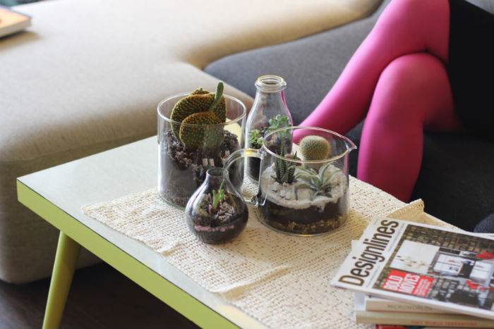
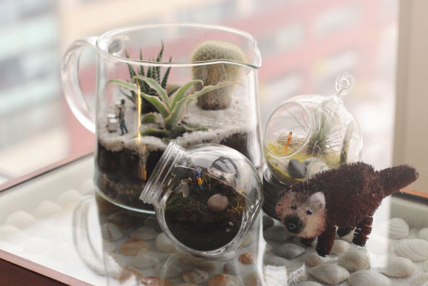
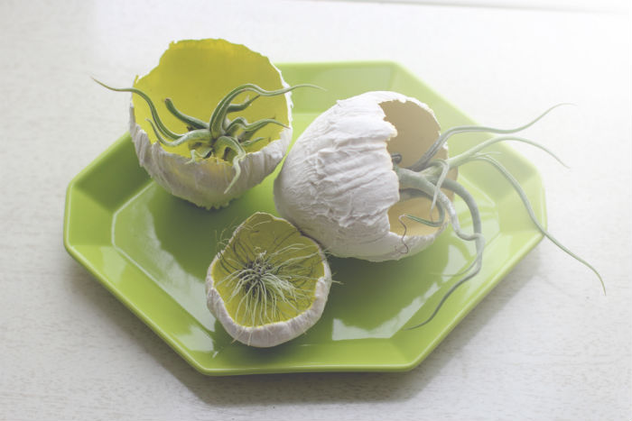
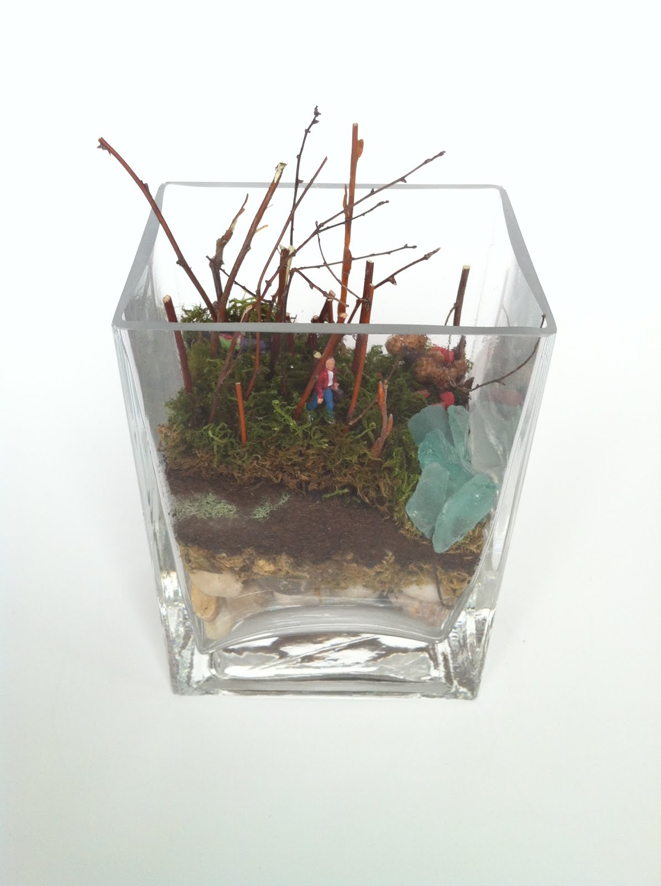

Everybody likes a low-maintenance house guest. In general, succulents and cacti are quite independent and stand-offish and don’t require a ton of attention...just a little water and light.
Water - Nobody likes a cold shower...your terrarium is happiest with room temperature water. In growing season (spring to fall), water once a week with ½ to 1 shot glass of water (filtered is better). During dormant season (winter), water once a month or so with ½ to 1 shot glass of water. Always allow the soil to dry out between waterings please.
Signs your terrarium is getting too much water - Your plants are looking soft and discoloured, possibly sporting translucent leaves.
Signs your terrarium is getting too little water - Your plant is shedding leaves or pesky brown spots are appearing on the leaves.
Light - Your terrarium thrives in bright, indirect sunlight; in a window is nice.
Signs your terrarium is getting too much light - The leaves are literally scorched or have a bleached out or yellowed look. We want vibrant colour!
Signs your terrarium is getting too little light - Your plants are desperately stretching towards a light source, reaching with all their might.
Caring for your air plant (Tillandsia) is also pretty easy peasy. Again, just light and water.
Water - Air plants like morning baths and mists. Place plants in a bowl or on a plate of water for 2 hours every 2 or 3 weeks. In between baths, lightly mist the plants a few times a week; 1 or 2 squirts from a spray bottle should do the trick. Be sure to shake excess water off so the poor things don’t rot and stay away from distilled or softened water.
Don’t be afraid to get to know your air plant...give it a little feel. After a drink, the leaves will feel stiff and full of water. When thirsty, the leaves will feel softer and will appear lighter in colour.
Signs your air plant is getting too little water - The leaves will be flaccid, wrinkled or rolled.
Light - Air plants enjoy bright, filtered light, so no dark corners (as if you would hide these little beauties in the dark!).
I have listened and, although I believe in you and know you are more than capable of keeping a succulent and/or cactus terrarium alive and happy, I have started making all-moss terrariums, which require almost NO MAINTENANCE. You read that right…no need to worry about water or special light or temperature conditions for moss! Dream come true, right?
Water – Less is more. Moss has a high tolerance for dehydration. If your moss terrarium looks good, leave it alone. If you notice it looking a little dry or less vibrant, you can mist it with a little water, but no need to drench it since moss has no root system.
If possible, distilled or rain water is preferred since chlorine and other minerals can sometimes brown the moss. I just use tap water, which sits out in a jug overnight to dechlorinate it. It works fine.
Signs your moss terrarium is getting too much water - Over-watering could lead to mould. Yuck.
Light – Direct sunlight cooks moss, which is not recommended. So, indirect or filtered light is best. Moss will even thrive under artificial light conditions, which makes it ideal for your office desk!!
Temperature – Regular old room temperature works for moss, just like it works for you